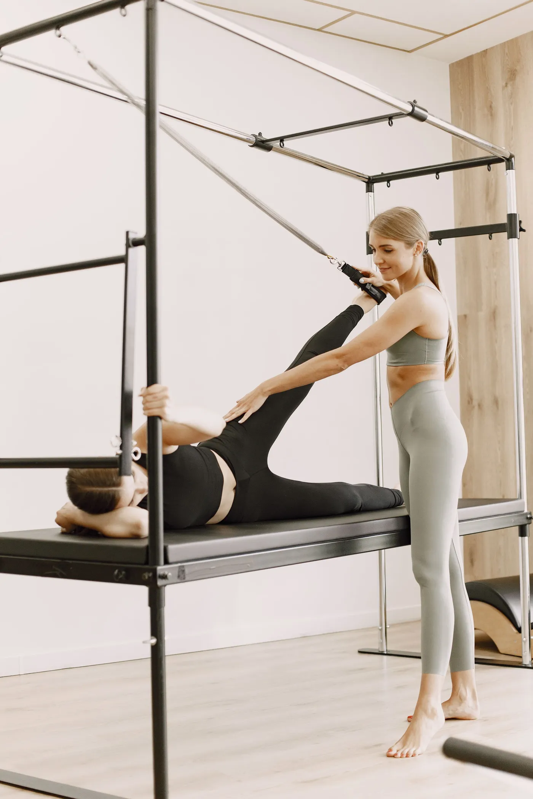
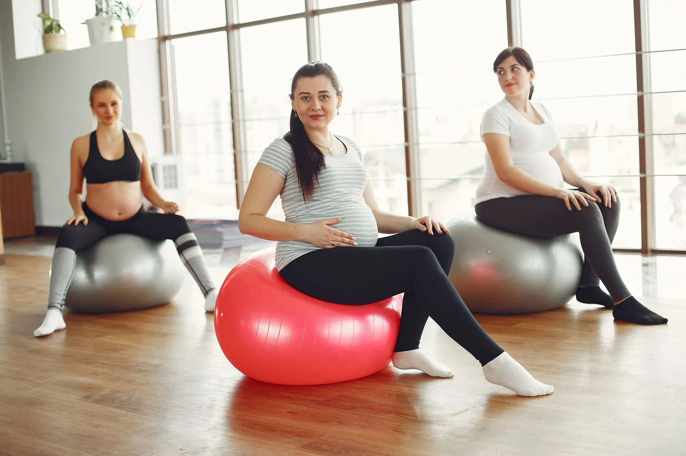
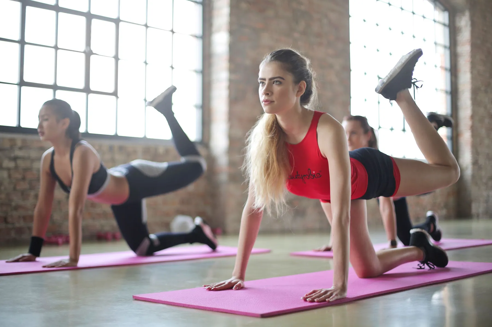
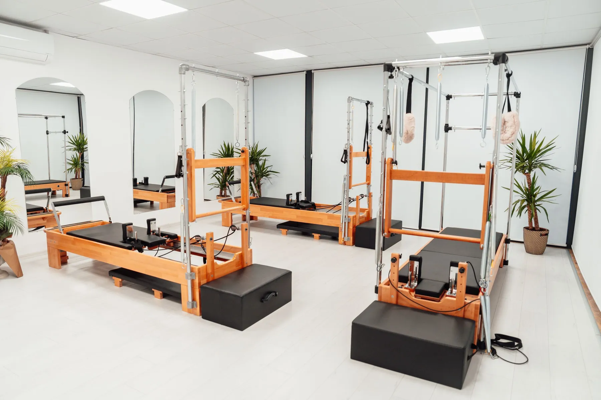
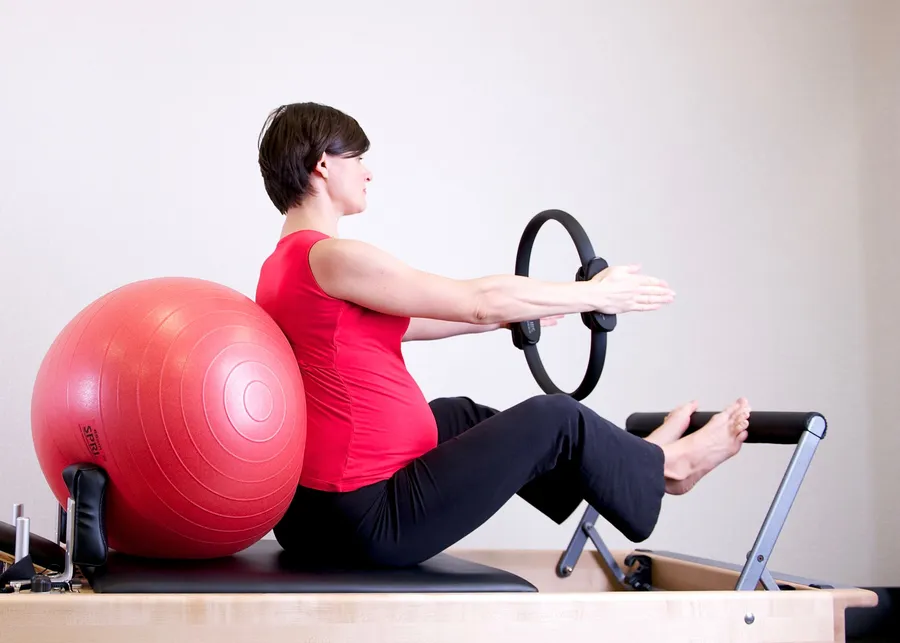
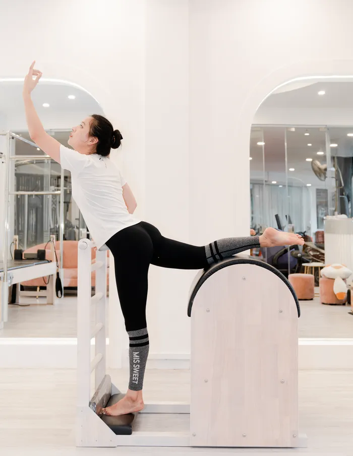
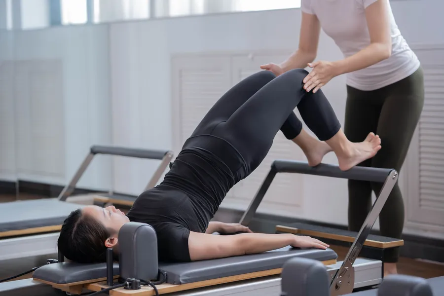
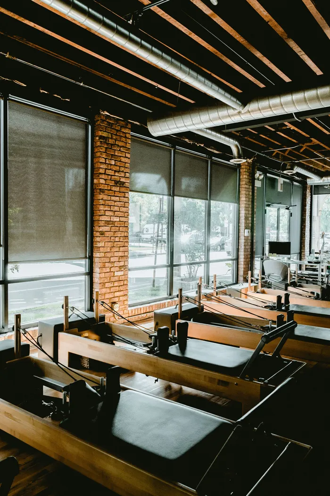
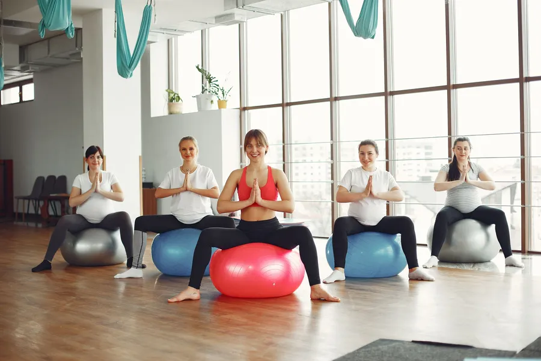
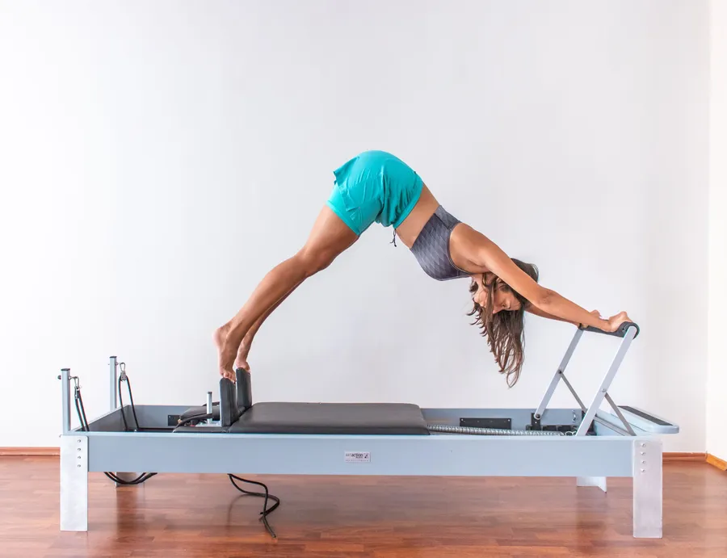

Gücün,yavaş kurulur.
Reformer ve cadillac pilatesi, hamile pilatesi, fonksiyonel antrenman.
- Reformer / Cadillac
- Hamile pilatesi
- Fonksiyonel antrenman
Hız için değil, doğruluk için. Her hareket nefesle başlar, merkezden çıkar, kontrolle biter.
Bu cümle örnektir; yayında stüdyonun kendi anlatımı, kendi cümlelerinizle yazılır.

Reformer ve cadillac.
Yaylı reformer ve cadillac ile kontrollü, akıcı hareketler. Güç, denge ve esneklik bir arada çalışılır; yay direnci zorluğu ayarlar.
- Ayarlanabilir zorluk
- Ekipman ilk derste tanıtılır
- Her seviyeye uyarlanır

Hamile pilatesi.
Doktorunuzun onayıyla, döneminize uygun hareketlerle. Nefes ve rahatlama ön planda; tempo sizin.
- Doktor onayıyla başlanır
- Döneme göre uyarlama
- Nefes ve rahatlama

Fonksiyonel antrenman.
Günlük hareketlere yarayan, vücudu bütün olarak çalıştıran antrenman: çömelmek, taşımak, dönmek, denge.
- Bütüncül çalışma
- Ekipmansız ya da hafif ekipman
- Seviyenize göre kurulur

"Bebeğini stüdyoda büyüten pilates eğitmeni."
Ayşegül Uygur'un Instagram biyografisindenHaftanız nasıl görünür?
Aşağıdaki program örnektir. Program seçicide tercihlerinizi işaretleyince size uyan bloklar parlar.
Gün ve zaman blokları örnek yerleşimdir; gerçek ders saatleri stüdyo ile birlikte yazılır.
Size uygun dersi birlikte bulalım.
Dört kısa soru; öneri ve hazır WhatsApp mesajı yanda güncellenir. Mesaj siz gönder'e basmadan kimseye gitmez.
Stüdyodan kareler.
Yayında buraya kendi stüdyonuzun ve derslerinizin fotoğrafları gelir.








Aklınıza takılan.
Hiç pilates yapmadım, başlayabilir miyim?
Örnek cevap: ilk derste kısa bir tanışma yapılır, hareketler seviyenize göre seçilir. Yayında bu cevap stüdyonun kendi sözleriyle yazılır.
Hamileyim; ne zaman başlayabilirim?
Örnek cevap: hamile pilatesine doktorunuzun onayıyla başlanır; dönem ve haftanız eğitmenle konuşulur. Yayında stüdyonun gerçek yönergesi yazılır.
Ne giymeliyim, yanımda ne getirmeliyim?
Örnek cevap: rahat hareket edebileceğiniz kıyafet ve kaymaz çorap. Yayında stüdyonun kendi listesi yazılır.
Şemikler'de, sizi bekliyor.
- Adres
- Şemikler, Hüseyin Çokal Cd. 89/A
Pamukkale / Denizli - Telefon / WhatsApp
- 0533 689 21 79
- @ayseguluygur.pilatestudio